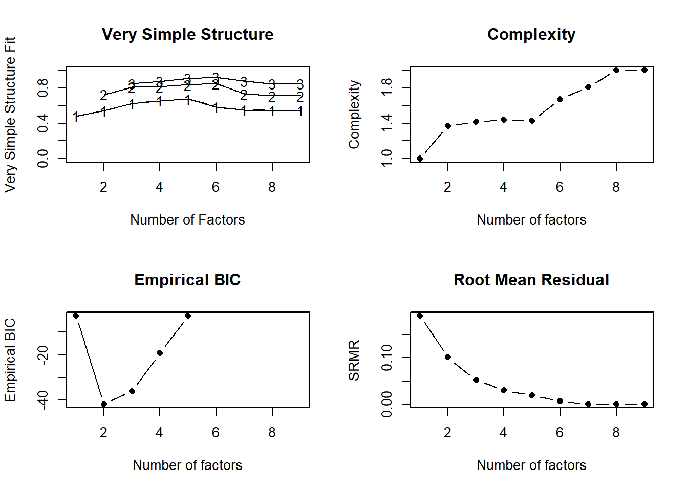
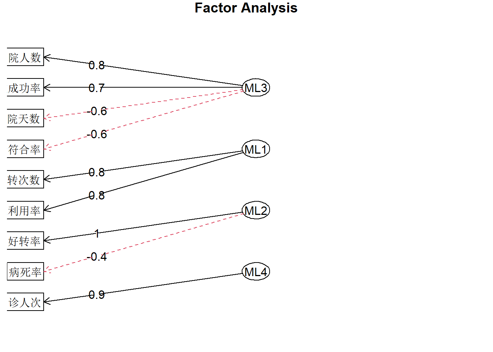
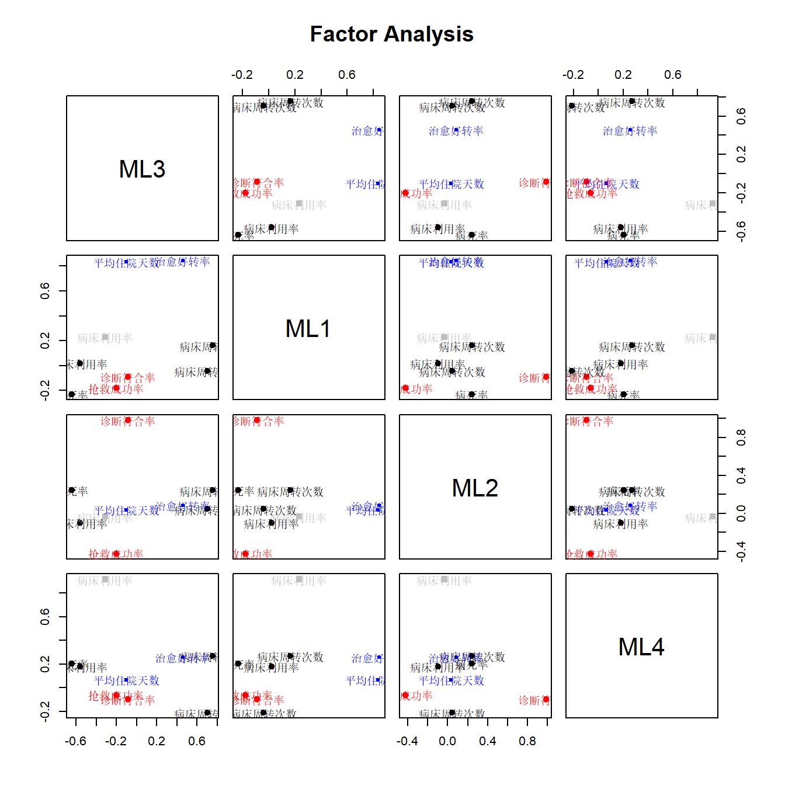
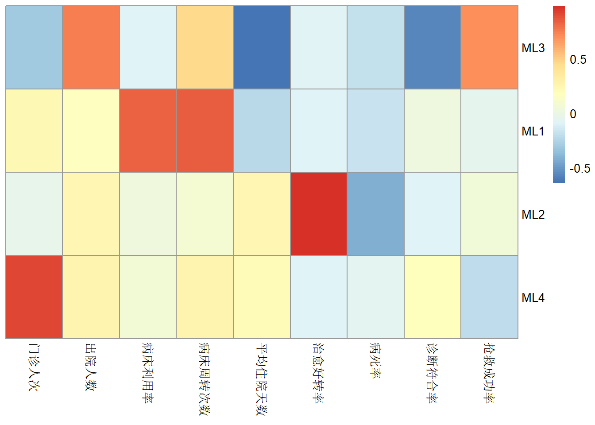

df <- foreign::read.spss("datasets/例22-02.sav",to.data.frame = T,
reencode = "utf-8")
names(df) <- c("年","月","门诊人次","出院人数","病床利用率","病床周转次数",
"平均住院天数","治愈好转率","病死率","诊断符合率","抢救成功率")
str(df)
## 'data.frame': 36 obs. of 11 variables:
## $ 年 : num 1991 1991 1991 1991 1991 ...
## $ 月 : num 1 2 3 4 5 6 7 8 9 10 ...
## $ 门诊人次 : num 4.34 3.45 4.38 4.18 4.32 4.13 4.57 4.31 4.06 4.43 ...
## $ 出院人数 : num 389 271 385 377 378 349 361 209 425 458 ...
## $ 病床利用率 : num 99.1 88.3 104 99.5 102 ...
## $ 病床周转次数: num 1.23 0.85 1.21 1.19 1.19 1.1 1.14 0.52 0.93 0.95 ...
## $ 平均住院天数: num 25.5 23.6 26.5 26.9 27.6 ...
## $ 治愈好转率 : num 93.2 94.3 92.5 93.9 93.2 ...
## $ 病死率 : num 3.56 2.44 4.02 2.92 1.99 4.38 2.73 3.65 3.09 4.21 ...
## $ 诊断符合率 : num 97.5 97.9 98.5 99.4 99.7 ...
## $ 抢救成功率 : num 61.7 73.3 76.8 63.2 80 ...
## - attr(*, "variable.labels")= Named chr [1:11] "" "" "" "" ...
## ..- attr(*, "names")= chr [1:11] "...." ".·." ".....˴." "..Ժ...." ...
psych::headTail(df)
## 年 月 门诊人次 出院人数 病床利用率 病床周转次数 平均住院天数 治愈好转率
## 1 1991 1 4.34 389 99.06 1.23 25.46 93.15
## 2 1991 2 3.45 271 88.28 0.85 23.55 94.31
## 3 1991 3 4.38 385 103.97 1.21 26.54 92.53
## 4 1991 4 4.18 377 99.48 1.19 26.89 93.86
## ... ... ... ... ... ... ... ... ...
## 33 1993 9 3.9 555 80.58 1.1 23.08 94.38
## 34 1993 10 3.62 554 87.21 1.1 22.5 92.43
## 35 1993 11 3.75 586 90.31 1.12 23.73 92.47
## 36 1993 12 3.77 627 86.47 1.24 23.22 91.17
## 病死率 诊断符合率 抢救成功率
## 1 3.56 97.51 61.66
## 2 2.44 97.94 73.33
## 3 4.02 98.48 76.79
## 4 2.92 99.41 63.16
## ... ... ... ...
## 33 2.06 96.82 91.79
## 34 3.22 97.16 87.77
## 35 2.07 97.74 93.89
## 36 3.4 98.98 89.832 探索性因子分析
在医学研究中有一些现象是难以直接观测的，通常称为不可测现象，它们只能通过其他多个可观测的指标来间接地反映。例如，脑部疾病患者的意识清醒状态是一个不可测现象，但可以通过患者的语言能力、辨识能力、记忆能力、理解能力、思维的逻辑能力等一系列可观测的指标来反映。这里，由于各个可观测指标都程度不同地反映了意识清醒状态这一不可测现象，因此这些可观测指标之间呈现出一定的相关性。很自然地，人们可以认为这些可观测指标之间的相关性主要是由它们所共同反映的不可测现象支配的。
对于多指标数据中呈现出的相关性，是否存在对这种相关性起支配作用的潜在因素？如果存在，如何找出这些潜在因素？这些潜在因素是怎样对原始指标起支配作用的？这些问题，都可以通过因子分析来解决。事实上，因子分析就是一种从分析多个原始指标的相关关系入手，找到支配这种相关关系的有限个不可观测的潜在变量（即：因子），并用这些潜在变量来解释原始指标之间的相关性或协方差关系的多元统计分析方法。
根据分析目的，因子分析可分为探索性因子分析（exploratory factor analysis，EFA）和验证性因子分析（confirmatory factor analysis，CFA）。
- 探索性因子分析：研究者事先并不清楚或不确定潜在因子与可测变量之间的关联，也不清楚可测变量会隐含多少个潜在因子。
- 如果研究者根据以往的研究经验或根据探索性因子分析的结果，对所要研究的可测变量与潜在因子之间的内在结构已然清楚，即已知哪些可测变量可能被哪些潜在因子影响，只需进一步确定可测变量在潜在因子上的载荷大小，并验证这种结构与数据的吻合程度，即为验证性因子分析。
本章主要介绍探索性因子分析。
先来看一个例子。观察5个生理指标：X1：收缩压，X2：舒张压，X3：心跳间隔，X4：呼吸间隔，X5：舌下温度。从生理知识知道，这5个指标是受自主神经的交感神经和副交感神经支配的，而交感神经和副交感神经状态又不能直接测定。若用F1、F2分别表示交感神经和副交感神经这2个因子，则可以设想，可测指标Xi是不可测因子Fj的线性函数，即Fj对各Xi的影响是线性的，再加上其他对这些Xi有影响的因子ei，则各Xi与F1、F2的关系可表示为：
\[ \begin{aligned} & X_{1}=a_{11}F_{1}+a_{12}F_{2}+e_{1} \\ & X_{2}=a_{21}F_{1}+a_{22}F_{2}+e_{2} \\ & X_{3}=a_{31}F_{1}+a_{32}F_{2}+e_{3} \\ & X_{4}=a_{41}F_{1}+a_{42}F_{2}+e_{4} \\ & X_{5}=a_{51}F_{1}+a_{52}F_{2}+e_{5}\end{aligned} \]
由于F1、F2与每一个Xi都有关，故称F1、F2为各Xi的公因子或共性因子（commonfactor），而各ei只与相应的一个Xi有关，故ei称为Xi的特殊因子或个性因子（specificfactor）。在这里，感兴趣的是如何从这一组观测数据出发，找出起支配作用的较少个数的公因子（这个过程类似于PCA中的找主成分）。
公因子能够帮助我们找出不同变量之间的内在联系和共同规律。通过提取公因子，我们可以用少数几个公因子来概括众多变量的信息，在一定程度上就能解释数据间的差异情况，从而简化对数据的分析和理解。
因子分析可以看做是主成分分析的进一步扩展，主成分分析重点在综合原始变量的信息，而因子分析重在解释原始变量之间的关系。
因子分析的步骤和主成分也是差不多的，关于因子分析前的一些准备工作可以参考之前主成分分析的步骤，比如相关矩阵的计算，KMO检验和Bartlett球形检验等，可以直接用performance::check_factorstructure实现。
只有数据之间的相关性好，才有可能提炼出公共因子，建议大家相关性分析和两个检验不要忘记。
32.1 演示数据
数据来自于孙振球医学统计学第4版例22-2。
某医院为了评价医疗工作质量，收集了三年的门诊人次、出院人数、病床利用率、病床周转次数、平均住院天数、治愈好转率、病死率、诊断符合率、抢救成功率9个指标，采用因子分析方法，探讨其综合评价体系。
32.2 确定最佳因子个数
这一步类似于PCA中的确定主成分的个数，使用的规则也是类似的。
Cattell的“碎石”检验是解决因子数量问题最简单的检验方法之一。Horn的“平行”分析是同样引人注目的方法。其他确定最优因子数量的方法包括寻找“极简单结构”（Very Simple Structure，VSS）准则（VSS）以Velicer的MAP程序（包含在VSS中）。VSS和MAP准则都包含在
nfactors函数中，该函数还会报告每个多重解的平均项目复杂度和贝叶斯信息准则（BIC）。–fa.parallel函数的帮助文档
psych包中的fa.parallel函数可以同时输出碎石检验和平行分析的结果，通过设置参数fa="both"同时给出PCA和因子分析的平行检验结果以及碎石图，fa="pc"只给出主成分分析的结果，fa="fa"只给出因子分析的结果：
# 只用后面9列数据
df.use <- df[,-c(1,2)]
library(psych)
# 碎石图和平行检验
set.seed(1)
fa.parallel(df.use, fa = "fa",fm="ml")
## Parallel analysis suggests that the number of factors = 3 and the number of components = NA平行分析建议我们提取3个因子。
碎石图的横坐标是因子个数，纵坐标是特征值，带三角形（图例有误）的蓝色线是真实数据的结果，红色线是模拟数据的结果和重抽样数据的结果，一般取在红色线以上的因子作为合适的个数或者取明显的转折点处的因子个数，从图中看，也是取3个比较合适。
但是提取几个因子并没有绝对的标准，我们可以结合多种方法或专业知识，特征值的大小和累积方差贡献率等，这个和提取主成分的方法类似。
下面给大家简单展示一下nfactors函数的用法：
# 多种方法确定最佳因子或主成分个数
nfactors(df.use)
##
## Number of factors
## Call: vss(x = x, n = n, rotate = rotate, diagonal = diagonal, fm = fm,
## n.obs = n.obs, plot = FALSE, title = title, use = use, cor = cor)
## VSS complexity 1 achieves a maximimum of 0.68 with 5 factors
## VSS complexity 2 achieves a maximimum of 0.85 with 6 factors
## The Velicer MAP achieves a minimum of 0.07 with 2 factors
## Empirical BIC achieves a minimum of -41.74 with 2 factors
## Sample Size adjusted BIC achieves a minimum of 3.18 with 5 factors
##
## Statistics by number of factors
## vss1 vss2 map dof chisq prob sqresid fit RMSEA BIC SABIC complex
## 1 0.48 0.00 0.090 27 7.8e+01 7.8e-07 8.09 0.48 0.227 -18.848 65.5 1.0
## 2 0.54 0.73 0.073 19 3.2e+01 3.0e-02 4.27 0.73 0.136 -35.955 23.4 1.4
## 3 0.62 0.81 0.097 12 2.0e+01 7.0e-02 2.34 0.85 0.132 -23.156 14.3 1.4
## 4 0.66 0.82 0.144 6 7.7e+00 2.6e-01 1.63 0.90 0.084 -13.795 4.9 1.4
## 5 0.68 0.84 0.205 1 3.6e+00 5.6e-02 0.97 0.94 0.269 0.056 3.2 1.4
## 6 0.59 0.85 0.290 -3 9.5e-01 NA 0.63 0.96 NA NA NA 1.7
## 7 0.55 0.73 0.486 -6 2.7e-09 NA 0.45 0.97 NA NA NA 1.8
## 8 0.55 0.71 1.000 -8 0.0e+00 NA 0.45 0.97 NA NA NA 2.0
## 9 0.55 0.71 NA -9 0.0e+00 NA 0.45 0.97 NA NA NA 2.0
## eChisq SRMR eCRMS eBIC
## 1 9.4e+01 1.9e-01 0.220 -2.7
## 2 2.6e+01 1.0e-01 0.139 -41.7
## 3 7.0e+00 5.2e-02 0.090 -36.0
## 4 2.3e+00 3.0e-02 0.073 -19.2
## 5 8.6e-01 1.8e-02 0.109 -2.7
## 6 1.2e-01 6.9e-03 NA NA
## 7 1.9e-10 2.7e-07 NA NA
## 8 2.3e-16 3.0e-10 NA NA
## 9 2.3e-16 3.0e-10 NA NA但是这个函数的输出结果有些凌乱了，现在我更推荐大家使用parameters，其实就是对nfactors函数的重新包装：
n <- parameters::n_factors(df.use)
n
## # Method Agreement Procedure:
##
## The choice of 3 dimensions is supported by 6 (31.58%) methods out of 19 (CNG, Optimal coordinates, Acceleration factor, Parallel analysis, Kaiser criterion, Scree (SE)).6个方法都支持选择3个因子,如果要想查看所有的方法及每个方法选择的因子个数,可以直接变为数据框查看:
as.data.frame(n) # 一共有18个方法!（选0个因子的不算）
## n_Factors Method Family
## 1 0 Scree (R2) Scree_SE
## 2 2 Bentler Bentler
## 3 2 t Multiple_regression
## 4 2 p Multiple_regression
## 5 2 Velicer's MAP Velicers_MAP
## 6 2 BIC BIC
## 7 3 CNG CNG
## 8 3 Optimal coordinates Scree
## 9 3 Acceleration factor Scree
## 10 3 Parallel analysis Scree
## 11 3 Kaiser criterion Scree
## 12 3 Scree (SE) Scree_SE
## 13 4 beta Multiple_regression
## 14 5 VSS complexity 1 VSS
## 15 5 BIC (adjusted) BIC
## 16 6 VSS complexity 2 VSS
## 17 7 Bartlett Barlett
## 18 7 Anderson Barlett
## 19 7 Lawley Barlett或者也可以查看这十几种结果的汇总表:
summary(n)
## n_Factors n_Methods Variance_Cumulative
## 1 2 5 0.4936863
## 2 3 6 0.6385558
## 3 4 1 0.7072393
## 4 5 2 0.7574222
## 5 6 1 0.7928020
## 6 7 3 0.8133083当然也可以把结果画出来的,借助see这个包即可:
library(see)
plot(n)+theme_modern()
横坐标是选择的因子数量,左侧纵坐标是方法的数量（百分比）,右侧纵坐标是解释的方差百分比。先看条形图，选择3个因子的方法最多，占了18个方法的30%以上；再看折线图，选择因子越多，解释的方差百分比越多，不过超过3之后就变化不大了。
32.3 因子分析初体验
下面我们首先用9个因子进行因子分析，看看结果再说。
rotate参数确定旋转方法，有多种不同的选择，比如不旋转、正交旋转法（比如最大方差法）、斜交旋转法等，
fm参数选择提取公共因子的计算方法，比如最大似然法ml、主轴迭代法pa、加权最小二乘wls、广义加权最小二乘gls、最小残差minres（默认），等。
# 进行因子分析，首先9个因子用一下看看结果再说，最大似然法，不旋转
fa.res <- fa(df.use, nfactors = 9, rotate = "none", fm="ml")
fa.res
## Factor Analysis using method = ml
## Call: fa(r = df.use, nfactors = 9, rotate = "none", fm = "ml")
## Standardized loadings (pattern matrix) based upon correlation matrix
## ML1 ML2 ML3 ML4 ML5 ML6 ML7 ML8 ML9 h2 u2 com
## 门诊人次 0.14 0.68 0.09 0.37 -0.06 -0.03 0 0 0 0.63 0.37 1.7
## 出院人数 0.68 -0.30 0.19 0.32 0.06 0.03 0 0 0 0.69 0.31 2.1
## 病床利用率 0.58 0.52 -0.09 -0.31 0.04 0.05 0 0 0 0.71 0.29 2.6
## 病床周转次数 0.90 0.20 -0.01 -0.01 0.01 -0.01 0 0 0 0.85 0.15 1.1
## 平均住院天数 -0.53 0.43 0.38 0.05 0.02 0.09 0 0 0 0.62 0.38 2.9
## 治愈好转率 -0.03 -0.07 0.69 -0.18 0.13 -0.02 0 0 0 0.53 0.47 1.2
## 病死率 -0.33 0.08 -0.46 0.18 0.24 0.09 0 0 0 0.42 0.58 2.9
## 诊断符合率 -0.31 0.54 0.02 0.02 -0.15 0.07 0 0 0 0.41 0.59 1.8
## 抢救成功率 0.41 -0.64 0.07 -0.03 -0.12 0.10 0 0 0 0.60 0.40 1.9
##
## ML1 ML2 ML3 ML4 ML5 ML6 ML7 ML8 ML9
## SS loadings 2.27 1.75 0.89 0.40 0.12 0.04 0.00 0.00 0.00
## Proportion Var 0.25 0.19 0.10 0.04 0.01 0.00 0.00 0.00 0.00
## Cumulative Var 0.25 0.45 0.55 0.59 0.60 0.61 0.61 0.61 0.61
## Proportion Explained 0.41 0.32 0.16 0.07 0.02 0.01 0.00 0.00 0.00
## Cumulative Proportion 0.41 0.74 0.90 0.97 0.99 1.00 1.00 1.00 1.00
##
## Mean item complexity = 2
## Test of the hypothesis that 9 factors are sufficient.
##
## df null model = 36 with the objective function = 3.82 with Chi Square = 119.03
## df of the model are -9 and the objective function was 0.46
##
## The root mean square of the residuals (RMSR) is 0.04
## The df corrected root mean square of the residuals is NA
##
## The harmonic n.obs is 36 with the empirical chi square 3.42 with prob < NA
## The total n.obs was 36 with Likelihood Chi Square = 11.69 with prob < NA
##
## Tucker Lewis Index of factoring reliability = 2.377
## Fit based upon off diagonal values = 0.99
## Measures of factor score adequacy
## ML1 ML2 ML3 ML4 ML5
## Correlation of (regression) scores with factors 0.94 0.90 0.79 0.70 0.42
## Multiple R square of scores with factors 0.88 0.80 0.63 0.50 0.18
## Minimum correlation of possible factor scores 0.77 0.61 0.26 -0.01 -0.65
## ML6 ML7 ML8 ML9
## Correlation of (regression) scores with factors 0.26 0 0 0
## Multiple R square of scores with factors 0.07 0 0 0
## Minimum correlation of possible factor scores -0.86 -1 -1 -1首先看因子载荷矩阵，即结果中的Standardized loadings：
在因子载荷矩阵中，每一行是一个原始变量，每一列是一个公共因子，这里我们由于使用了9个因子，所以结果中也显示为9个因子（ML1-ML9）。例如：门诊人次在ML1上的载荷为0.142，在ML2上的载荷为0.679。载荷的绝对值越大，说明该变量与对应因子的相关性越强。正载荷表示正相关，负载荷表示负相关。
h2是公因子方差，或者叫公共度或者共性方差，英文communality，表示每个原始变量的方差中能够被公共因子所解释的比例，u2是独特性（uniqueness），u2=1-h2，表示不能被公共因子解释的比例。公因子方差越接近1，说明该变量与公共因子的相关性越强，在因子分析中越能被有效解释。
com表示每个变量的复杂性（complexity）。变量的复杂性是指该变量在多个公共因子上的载荷分散程度。简单来说，它反映了一个变量与多个公共因子的关联情况。在因子分析中，我们提取公共因子来解释原始变量之间的相关性，如果一个变量只与一个公共因子有较强的相关性，那么它的复杂性就低；如果一个变量与多个公共因子都有一定程度的相关性，那么它的复杂性就高。
SS loadings：每个因子的载荷平方和，也称为特征值（eigenvalues）。它表示每个公共因子所解释的总方差。例如：ML1的SS loadings是2.27，说明ML1解释了约2.27个单位的方差。Proportion Var：每个因子解释的方差占总方差的比例。例如：ML1解释了总方差的0.25（25%）。Cumulative Var：多个因子累积解释的方差占总方差的比例。例如：ML1解释了总方差的0.25（25%），ML2和ML1解释了总方差的0.45（0.25+0.19），以此类推。Proportion Explained：方差解释的相对比例，即Proportion Var/sum(Proportion Var)Cumulative Proportion：Proportion Explained的加和。
根据结果中的Cumulative Var，累积方差解释，可以看到在使用3个因子时，累计贡献度是0.55，4个因子是0.59，结合碎石图，我们选择用4个因子（前面的方法都是建议选3个，选4个是为了和书中保持一致，你可以选择3个试试看，毕竟这个没有金标准）。
Mean item complexity = 2：表示平均复杂性是2。
然后是模型拟合的假设检验结果：
df null model = 36 with the objective function = 3.82 with Chi Square = 119.03
df of the model are -9 and the objective function was 0.46
The root mean square of the residuals (RMSR) is 0.04
The df corrected root mean square of the residuals is NA 零模型（即假设所有变量相互独立）的自由度为36，目标函数值为3.82，卡方值为119.03。提取9个公共因子的模型的自由度为-9，目标函数值为0.46。目标函数值越小，说明模型拟合得越好。
残差均方根（RMSR）衡量了模型预测值与实际值之间的差异程度。RMSR值越小，说明模型拟合效果越好。经过自由度校正后的残差均方根是NA。
再往下是观测数量：
The harmonic n.obs is 36 with the empirical chi square 3.42 with prob < NA
The total n.obs was 36 with Likelihood Chi Square = 11.69 with prob < NA 所有观测对数的调和平均数（the harmonic mean of all the pairwise counts of observations）是36，经验卡方是3.42。总的观测数量是36，似然比卡方是11.69。
再往下是拟合指数：
Tucker Lewis Index of factoring reliability = 2.377
Fit based upon off diagonal values = 0.99Tucker Lewis指数一般会在结构方程模型中报告，也被称为非范拟合指数（Non - Normed Fit Index，NNFI），是在因子分析以及结构方程模型等领域用于评估模型拟合优度的一个重要指标，通常希望大于0.9，值越大说明拟合效果越好。这里是2.377。
Fit based upon off diagonal values：可以将其视为1-resid2/cor2，或者是一将应用于相关矩阵而不是原始数据的R2。
最后是因子得分充分性度量：
Measures of factor score adequacy
ML1 ML2 ML3 ML4 ML5 ML6 ML7 ML8 ML9
Correlation of (regression) scores with factors 0.94 0.90 0.79 0.70 0.42 0.26 0 0 0
Multiple R square of scores with factors 0.88 0.80 0.63 0.50 0.18 0.07 0 0 0
Minimum correlation of possible factor scores 0.77 0.61 0.26 -0.01 -0.65 -0.86 -1 -1 -1这些结果告诉我们因子得分估计对潜在结构的代表性，可以被称为不确定性指数。
- Correlation of (regression) scores with factors：Multiple R square的平方根，可认为是因子得分估计的决定系数的上限，本质上是因子与观测数据之间的（多重）相关系数。
- Multiple R square of scores with factors：和回归分析中的R2的意思类似，越大越好。
- Minimum correlation of possible factor scores：2*R2-1
以上结果中的每个部分都可以单独提取，例如：
fa.res$loadings # 查看因子载荷矩阵
fa.res$communality # 公因子方差
fa.res$uniquenesses # 独特性
fa.res$complexity # 复杂性
fa.res$Vaccounted # 查看载荷平方和、方差解释比等
fa.res$STATISTIC # 似然比卡方
fa.res$dof # 公因子模型的自由度
fa.res$PVAL # P值32.4 进行因子分析
下面我们选择4个因子，重新进行因子分析，先不旋转：
# 选择4个因子，不旋转，主因子解：最小残差法
fa.res <- fa(df.use, nfactors = 4, rotate = "none", fm="minres")
## Warning in fa.stats(r = r, f = f, phi = phi, n.obs = n.obs, np.obs = np.obs, :
## The estimated weights for the factor scores are probably incorrect. Try a
## different factor score estimation method.
## Warning in fac(r = r, nfactors = nfactors, n.obs = n.obs, rotate = rotate, : An
## ultra-Heywood case was detected. Examine the results carefully
fa.res
## Factor Analysis using method = minres
## Call: fa(r = df.use, nfactors = 4, rotate = "none", fm = "minres")
## Standardized loadings (pattern matrix) based upon correlation matrix
## MR1 MR2 MR3 MR4 h2 u2 com
## 门诊人次 -0.20 0.86 0.05 0.47 1.00 0.00093 1.7
## 出院人数 0.72 0.02 0.12 0.34 0.65 0.35197 1.5
## 病床利用率 0.31 0.65 0.00 -0.46 0.73 0.27437 2.3
## 病床周转次数 0.80 0.58 0.01 -0.10 1.00 0.00227 1.9
## 平均住院天数 -0.65 0.18 0.33 0.05 0.56 0.43758 1.7
## 治愈好转率 0.02 -0.13 0.99 -0.08 1.00 -0.00329 1.1
## 病死率 -0.32 -0.05 -0.37 0.00 0.24 0.75666 2.0
## 诊断符合率 -0.49 0.35 0.02 -0.08 0.37 0.63478 1.9
## 抢救成功率 0.63 -0.39 0.01 0.11 0.56 0.44236 1.7
##
## MR1 MR2 MR3 MR4
## SS loadings 2.45 1.82 1.25 0.58
## Proportion Var 0.27 0.20 0.14 0.06
## Cumulative Var 0.27 0.48 0.61 0.68
## Proportion Explained 0.40 0.30 0.20 0.09
## Cumulative Proportion 0.40 0.70 0.91 1.00
##
## Mean item complexity = 1.7
## Test of the hypothesis that 4 factors are sufficient.
##
## df null model = 36 with the objective function = 3.82 with Chi Square = 119.03
## df of the model are 6 and the objective function was 0.27
##
## The root mean square of the residuals (RMSR) is 0.03
## The df corrected root mean square of the residuals is 0.07
##
## The harmonic n.obs is 36 with the empirical chi square 2.32 with prob < 0.89
## The total n.obs was 36 with Likelihood Chi Square = 7.71 with prob < 0.26
##
## Tucker Lewis Index of factoring reliability = 0.859
## RMSEA index = 0.084 and the 90 % confidence intervals are 0 0.25
## BIC = -13.8
## Fit based upon off diagonal values = 0.99选择4个因子，最终的累积方差解释是0.68，再看因子载荷矩阵，因子1（MR1）在出院人数、门诊人次、病床周转率、平均住院天数等具有较高的载荷，因子2在门诊人次、病床利用率、病床周转率等具有很大的载荷，因子3在治愈好转率具有较高的载荷，因子4的载荷都较低。
从专业角度来看，主因子解没有发现什么规律，好像不能很好的解释专业意义。
下面再试试主成分解的因子分析：
# 选择4个因子，不旋转，主成分解
fa.res <- fa(df.use, nfactors = 4, rotate = "none", fm="pa")
## Warning in fa.stats(r = r, f = f, phi = phi, n.obs = n.obs, np.obs = np.obs, :
## The estimated weights for the factor scores are probably incorrect. Try a
## different factor score estimation method.
## Warning in fac(r = r, nfactors = nfactors, n.obs = n.obs, rotate = rotate, : An
## ultra-Heywood case was detected. Examine the results carefully
fa.res
## Factor Analysis using method = pa
## Call: fa(r = df.use, nfactors = 4, rotate = "none", fm = "pa")
## Standardized loadings (pattern matrix) based upon correlation matrix
## PA1 PA2 PA3 PA4 h2 u2 com
## 门诊人次 -0.20 0.88 0.07 0.47 1.03 -0.034 1.7
## 出院人数 0.72 0.02 0.11 0.34 0.64 0.357 1.5
## 病床利用率 0.31 0.63 0.02 -0.45 0.69 0.305 2.3
## 病床周转次数 0.81 0.59 0.02 -0.13 1.02 -0.023 1.9
## 平均住院天数 -0.64 0.17 0.32 0.05 0.55 0.453 1.7
## 治愈好转率 0.02 -0.16 1.04 -0.07 1.12 -0.123 1.1
## 病死率 -0.32 -0.04 -0.36 -0.01 0.23 0.770 2.0
## 诊断符合率 -0.49 0.35 0.03 -0.09 0.37 0.635 1.9
## 抢救成功率 0.63 -0.39 -0.01 0.13 0.56 0.440 1.8
##
## PA1 PA2 PA3 PA4
## SS loadings 2.46 1.84 1.34 0.58
## Proportion Var 0.27 0.20 0.15 0.06
## Cumulative Var 0.27 0.48 0.63 0.69
## Proportion Explained 0.40 0.30 0.22 0.09
## Cumulative Proportion 0.40 0.69 0.91 1.00
##
## Mean item complexity = 1.7
## Test of the hypothesis that 4 factors are sufficient.
##
## df null model = 36 with the objective function = 3.82 with Chi Square = 119.03
## df of the model are 6 and the objective function was 0.26
##
## The root mean square of the residuals (RMSR) is 0.03
## The df corrected root mean square of the residuals is 0.07
##
## The harmonic n.obs is 36 with the empirical chi square 2.25 with prob < 0.9
## The total n.obs was 36 with Likelihood Chi Square = 7.46 with prob < 0.28
##
## Tucker Lewis Index of factoring reliability = 0.88
## RMSEA index = 0.077 and the 90 % confidence intervals are 0 0.246
## BIC = -14.04
## Fit based upon off diagonal values = 0.99最终的累积方差解释是0.69，再看因子载荷矩阵，因子1（PA1）在出院人数、病床周转、平均住院天数等具有较高的载荷，因子2在门诊人次、病床利用率等具有很大的载荷，因子3在治愈好转率具有较高的载荷，因子4在门诊人次、病床利用率、具有较高的载荷。
从专业角度来看，因子1可以反应病房的情况，但是其他因子貌似没什么专业意义。
32.5 因子旋转
建立因子分析模型的目的不仅是找出公因子，更重要的是弄清各公因子的专业意义，以便对实际问题进行分析。然而在很多情况下，因子分析的主成分解、主因子解的各公因子的典型代表变量并不是很突出，容易使各公因子的专业意义难以解释，从而达不到因子分析的主要目的。
通过因子旋转我们可以更容易找到内在规律，使得结果更加容易结合专业背景进行解释。
常见的因子旋转方法有正交旋转和斜交旋转两大类。正交旋转能保持各个指标的共性方差不变，每个因子的意义相对独立和清晰，解释起来较为简单直观，在一些探索性研究或初步分析中，有助于简化分析过程和理解因子结构。斜交旋转在解释因子结构时相对复杂一些，需要同时考虑因子载荷和因子之间的相关系数。但在一些复杂的研究问题中，能够提供更全面和深入的信息。
# 选择4个因子，最大方差旋转，最大似然法
fa.res <- fa(df.use, nfactors = 4, rotate = "varimax", fm="ml")
fa.res
## Factor Analysis using method = ml
## Call: fa(r = df.use, nfactors = 4, rotate = "varimax", fm = "ml")
## Standardized loadings (pattern matrix) based upon correlation matrix
## ML3 ML1 ML2 ML4 h2 u2 com
## 门诊人次 -0.31 0.23 -0.03 0.92 1.00 0.005 1.4
## 出院人数 0.75 0.16 0.24 0.27 0.72 0.276 1.6
## 病床利用率 -0.10 0.83 0.03 0.07 0.71 0.289 1.0
## 病床周转次数 0.46 0.84 0.09 0.26 1.00 0.005 1.8
## 平均住院天数 -0.64 -0.23 0.24 0.21 0.57 0.435 1.8
## 治愈好转率 -0.09 -0.09 0.98 -0.10 1.00 0.005 1.1
## 病死率 -0.20 -0.18 -0.42 -0.06 0.26 0.743 1.9
## 诊断符合率 -0.56 0.02 -0.10 0.18 0.36 0.642 1.3
## 抢救成功率 0.70 -0.04 0.04 -0.21 0.55 0.455 1.2
##
## ML3 ML1 ML2 ML4
## SS loadings 2.15 1.58 1.29 1.12
## Proportion Var 0.24 0.18 0.14 0.12
## Cumulative Var 0.24 0.41 0.56 0.68
## Proportion Explained 0.35 0.26 0.21 0.18
## Cumulative Proportion 0.35 0.61 0.82 1.00
##
## Mean item complexity = 1.4
## Test of the hypothesis that 4 factors are sufficient.
##
## df null model = 36 with the objective function = 3.82 with Chi Square = 119.03
## df of the model are 6 and the objective function was 0.24
##
## The root mean square of the residuals (RMSR) is 0.04
## The df corrected root mean square of the residuals is 0.09
##
## The harmonic n.obs is 36 with the empirical chi square 3.43 with prob < 0.75
## The total n.obs was 36 with Likelihood Chi Square = 6.84 with prob < 0.34
##
## Tucker Lewis Index of factoring reliability = 0.931
## RMSEA index = 0.055 and the 90 % confidence intervals are 0 0.235
## BIC = -14.67
## Fit based upon off diagonal values = 0.99
## Measures of factor score adequacy
## ML3 ML1 ML2 ML4
## Correlation of (regression) scores with factors 0.93 0.96 1.00 0.98
## Multiple R square of scores with factors 0.86 0.92 0.99 0.96
## Minimum correlation of possible factor scores 0.72 0.85 0.99 0.91此时我们再看因子载荷阵，因子3在出院人数、平均住院天数、诊断符合率、抢救成功率等多个指标上具有较大的载荷，因子2在治愈好转率、病死率上载荷最大，因子1在病床利用率、病床周转次数这两个指标上载荷最高，因子4在门诊人次的载荷最大。
因此可以认为因子3反映了反映了医疗工作质量各个方面的情况，称为综合因子；因子1反应病床利用情况，可以称为病床利用因子；因子2反映了医疗水平，称为水平因子；因子4反应了就诊患者数量，称为数量因子。
由于因子分析的结果并不是唯一的，大家可以多尝试其他方法，可根据具体情况选择不同方法来获得符合客观实际的解。
32.6 结果可视化
展示每个因子在各个变量中的载荷大小。这个图也叫路径图，在结构方程模型和验证性因子分析中非常常见。
fa.diagram(fa.res)
下面这张图是另一种展示方法，只看右上三角或者左下三角即可，是一样的。以右上三角为例：以第一行为例，第一行是ML3这个因子，看第一行第二列的这个子图形，它的横坐标是ML1这个因子，纵坐标是ML3这个因子，图中的点（被文字覆盖住了）是不同的变量，每个点的坐标就是该变量在不同因子上的载荷值。
# 这个图实在是有些太花里胡哨了
factor.plot(fa.res,
labels = colnames(df.use[,c(-1,-2)]),
show.points = T)
# 或者plot(fa.res)由于上图太过于花里胡哨，不便解读，所以我们也可以直接自己提取数据，使用其他可视化R包自己绘制图形，我这里演示下如何使用pheatmap通过热图的形式展示因子载荷：
# 1行代码就行了
pheatmap::pheatmap(t(fa.res$loadings),cluster_rows = F,cluster_cols = F)
这个热图就很好解读了，横坐标是不同的变量，纵坐标是不同的因子，颜色深浅表示载荷的绝对值大小，红色表示正相关，蓝色表示负相关。是不是很直观呢？
32.7 参考资料
- https://m-clark.github.io/posts/2020-04-10-psych-explained/
- 孙振球医学统计学第4版和第5版
- https://stats.oarc.ucla.edu/spss/seminars/introduction-to-factor-analysis/a-practical-introduction-to-factor-analysis/
- R语言医学多元统计分析，赵军、戴静毅